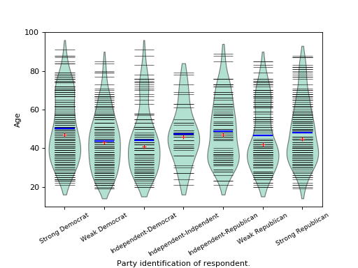

statsmodels.graphics.boxplots.beanplot¶
-
statsmodels.graphics.boxplots.beanplot(data, ax=None, labels=None, positions=None, side='both', jitter=False, plot_opts={})[source]¶ Make a bean plot of each dataset in the data sequence.
A bean plot is a combination of a violinplot (kernel density estimate of the probability density function per point) with a line-scatter plot of all individual data points.
Parameters: - data (sequence of ndarrays) – Data arrays, one array per value in positions.
- ax (Matplotlib AxesSubplot instance, optional) – If given, this subplot is used to plot in instead of a new figure being created.
- labels (list of str, optional) – Tick labels for the horizontal axis. If not given, integers
1..len(data)are used. - positions (array_like, optional) – Position array, used as the horizontal axis of the plot. If not given, spacing of the violins will be equidistant.
- side ({'both', 'left', 'right'}, optional) – How to plot the violin. Default is ‘both’. The ‘left’, ‘right’ options can be used to create asymmetric violin plots.
- jitter (bool, optional) – If True, jitter markers within violin instead of plotting regular lines around the center. This can be useful if the data is very dense.
- plot_opts (dict, optional) –
A dictionary with plotting options. All the options for violinplot can be specified, they will simply be passed to violinplot. Options specific to beanplot are:
- ’violin_width’ : float. Relative width of violins. Max available
- space is 1, default is 0.8.
- ’bean_color’, MPL color. Color of bean plot lines. Default is ‘k’.
- Also used for jitter marker edge color if jitter is True.
- ’bean_size’, scalar. Line length as a fraction of maximum length.
- Default is 0.5.
- ’bean_lw’, scalar. Linewidth, default is 0.5.
- ’bean_show_mean’, bool. If True (default), show mean as a line.
- ’bean_show_median’, bool. If True (default), show median as a
- marker.
- ’bean_mean_color’, MPL color. Color of mean line. Default is ‘b’.
- ’bean_mean_lw’, scalar. Linewidth of mean line, default is 2.
- ’bean_mean_size’, scalar. Line length as a fraction of maximum length.
- Default is 0.5.
- ’bean_median_color’, MPL color. Color of median marker. Default
- is ‘r’.
- ’bean_median_marker’, MPL marker. Marker type, default is ‘+’.
- ’jitter_marker’, MPL marker. Marker type for
jitter=True. - Default is ‘o’.
- ’jitter_marker’, MPL marker. Marker type for
- ’jitter_marker_size’, int. Marker size. Default is 4.
- ’jitter_fc’, MPL color. Jitter marker face color. Default is None.
- ’bean_legend_text’, str. If given, add a legend with given text.
Returns: fig – If ax is None, the created figure. Otherwise the figure to which ax is connected.
Return type: Matplotlib figure instance
See also
violinplot- Violin plot, also used internally in beanplot.
matplotlib.pyplot.boxplot- Standard boxplot.
References
P. Kampstra, “Beanplot: A Boxplot Alternative for Visual Comparison of Distributions”, J. Stat. Soft., Vol. 28, pp. 1-9, 2008.
Examples
We use the American National Election Survey 1996 dataset, which has Party Identification of respondents as independent variable and (among other data) age as dependent variable.
>>> data = sm.datasets.anes96.load_pandas() >>> party_ID = np.arange(7) >>> labels = ["Strong Democrat", "Weak Democrat", "Independent-Democrat", ... "Independent-Indpendent", "Independent-Republican", ... "Weak Republican", "Strong Republican"]
Group age by party ID, and create a violin plot with it:
>>> plt.rcParams['figure.subplot.bottom'] = 0.23 # keep labels visible >>> age = [data.exog['age'][data.endog == id] for id in party_ID] >>> fig = plt.figure() >>> ax = fig.add_subplot(111) >>> sm.graphics.beanplot(age, ax=ax, labels=labels, ... plot_opts={'cutoff_val':5, 'cutoff_type':'abs', ... 'label_fontsize':'small', ... 'label_rotation':30}) >>> ax.set_xlabel("Party identification of respondent.") >>> ax.set_ylabel("Age") >>> plt.show()
(Source code, png, hires.png, pdf)

{kind=link}
{kind=link}